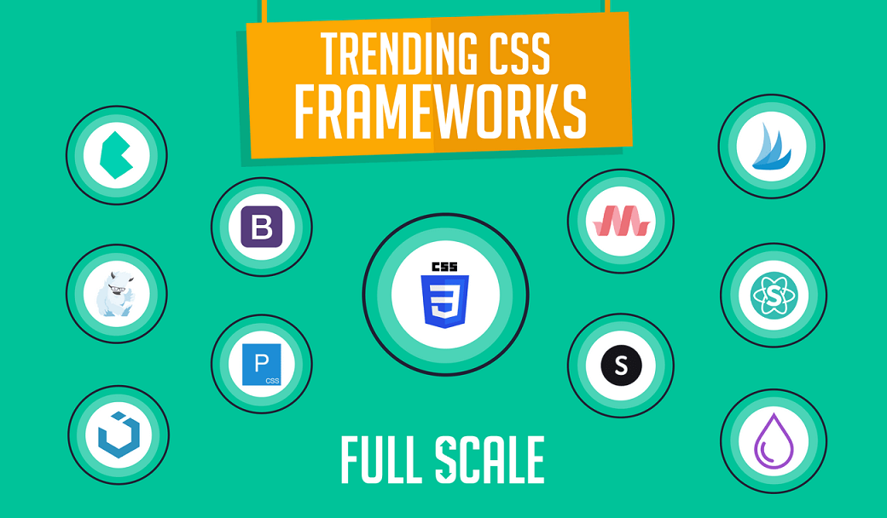

Frameworks de CSS
Inicio
Temas
Tema 1
Tema 2
Recursos digitales
Recurso digital 1
Recurso digital 2
Aprendizaje
Actividad 1
Actividad 2
Autor

tu navegador no es compatible con el audio de HTML5
Bibliografía
arimetrics. (s.f.). Qué es Framework. Obtenido de arimetrics.com: https://www.arimetrics.com/glosario-digital/framework
edix. (26 de julio de 2022). Framework. Obtenido de edix.com: https://www.edix.com/es/instituto/framework/